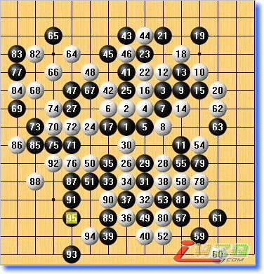

顾炜读秒捡漏荣获首届上海棋王
#1 顾炜读秒捡漏荣获首届上海棋王 作者：有志青年 发表时间：2008-1-27 7:44:01
（上海消息通讯员：百川）1月26日，第一届上海五子棋棋王战决赛第4局续战。本轮葛凌峰七段布局“疏星”，顾炜八段未加思索即提出交换。顾炜第13手采用了一个比较冷门的变招，葛凌峰开始长考。从实战进程分析，葛凌峰似乎并不熟悉这个黑13变招，双方行进到黑23，葛凌峰已经耗费了差不多60分钟。接着，葛凌峰用了近40分钟考虑白24的变化。白28后，顾炜开始长考，在耗费了30分钟的考虑时间后，顾炜选择了在上面防御。白30开始葛凌峰展现了精湛的攻击技巧，顾炜执黑苦苦防御。白40是局部精妙的手段，顾炜经过半小时考虑，自第41手开始，采用了一套以攻击来化解攻击的方法。黑51后，葛凌峰还剩下不到20分钟。白66后尽管白棋在左侧还有机会，但是葛凌峰进入了读秒阶段。白82后，黑棋抓住了最后的机会，在左下方展开进攻。黑91是最后的骗招，葛凌峰可能是由于激战半天疲惫的关系，也可能是由于读秒而过分依赖第一感的关系，白92弈出败招，黑93后简单VCF胜。顾炜最终幸运的在读秒阶段抓住葛凌峰的失误而获胜，于是也以3：1的总比分获得第一届上海五子棋棋王。

5A=6 黑95白投了 首届上海棋王战决赛第4局
白12=20分；白16=10分；白18=10分；白24=40分；黑29=30分；
白40=15分；黑41=30分；黑83=15分；黑87=15分；黑91=15分。
赛后，裁判长顾伟国五段、戈翀宇六段和两位棋手进行了长时间的复盘。顾炜表示，能够取得胜利完全是侥幸，葛凌峰是一位实力高超而顽强的对手，比赛的胜利属于我们两个人。葛凌峰表示，祝贺顾炜获胜，实战白40的考虑过于简单，还是不够精巧，值得检讨。顾伟国表示，两位上海第一代棋手争夺上海第一个头衔战，既有巧合成分，也是对第一代棋手多年心血的认可，顾炜从事行政工作多年，本次能够获胜，确实殊为不易，葛凌峰近来也是事务缠身，虽败犹荣。
比赛期间，罗锦伟六段、薛文曦